压缩工具该有的，都有
打开 zip、7z、rar、tar、iso 等数十种格式。创建 zip、7z 和 tar，可用 AES-256 密码。浏览、搜索、把文件拖到资源管理器，也能把压缩文件转成其他格式；原文件会保留，由你决定是否删除。
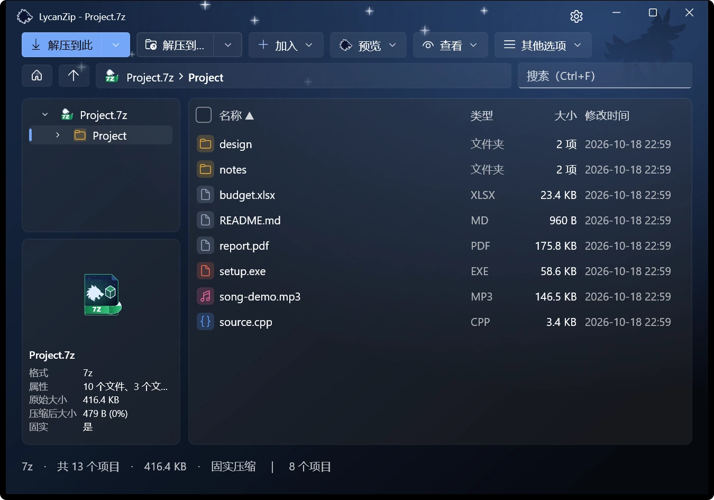
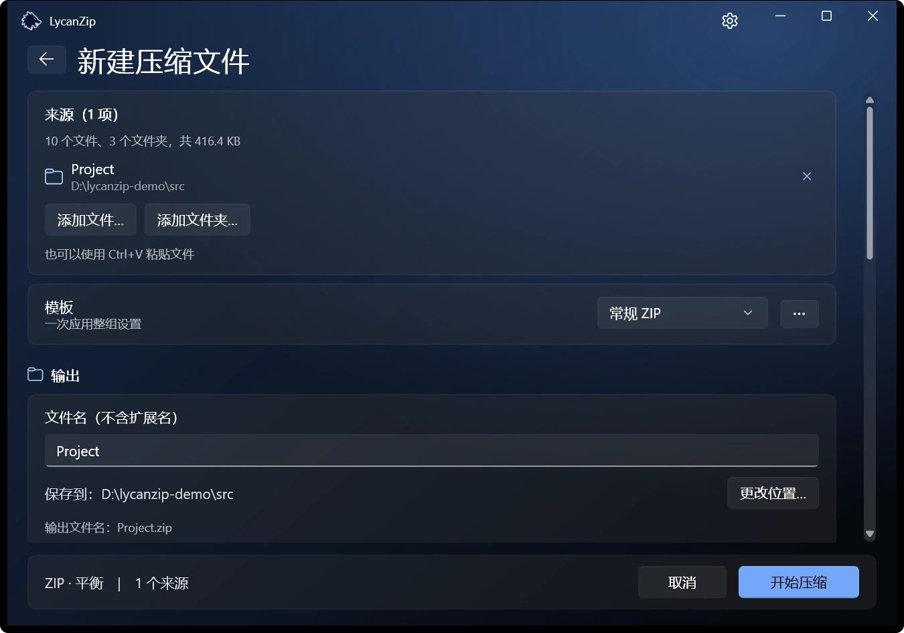
Windows 10 · Windows 11 专用
Zip、7z、tar 等格式，界面和操作都像 Windows 11。免费、开源、没有广告、不收集任何数据。

1.1 新功能：预览窗格、阅读模式、密码管理器、压缩文件格式转换，以及新增五种语言。 查看更新内容
打开 zip、7z、rar、tar、iso 等数十种格式。创建 zip、7z 和 tar，可用 AES-256 密码。浏览、搜索、把文件拖到资源管理器，也能把压缩文件转成其他格式；原文件会保留，由你决定是否删除。


Big5、GBK、Shift-JIS、EUC-KR 文件名的旧 zip 会自动检测。升级这类压缩文件后，文件名以 UTF-8 存储，在任何电脑上都能正确显示；数据本身原样复制。
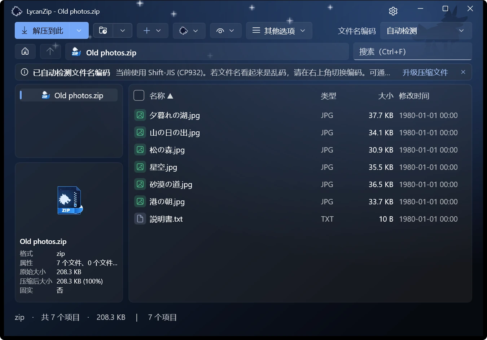
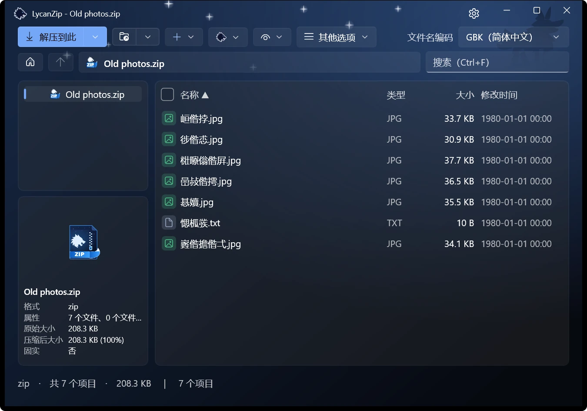
选中文件，预览窗格就会显示它：图片、文本、PDF 和音频。图片也能在带缩略图栏、缩放和动画的查看器中打开；音乐可用内置播放器播放，并显示标签。
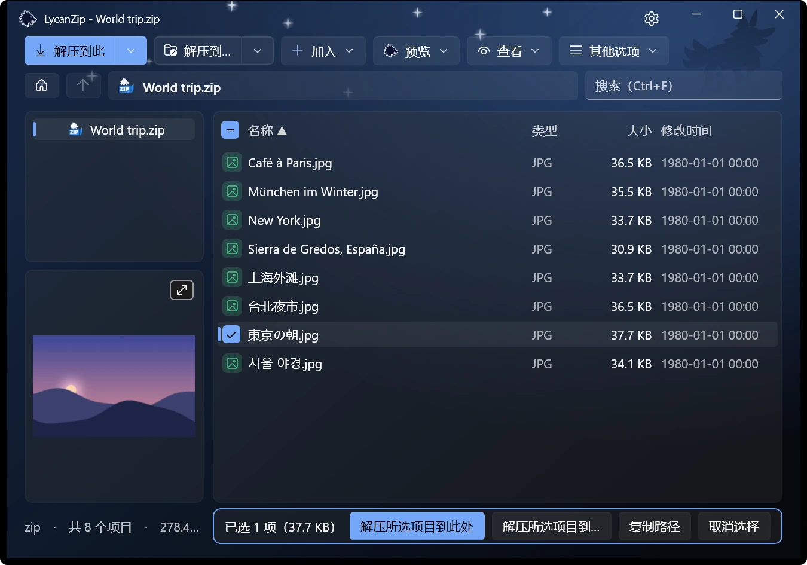
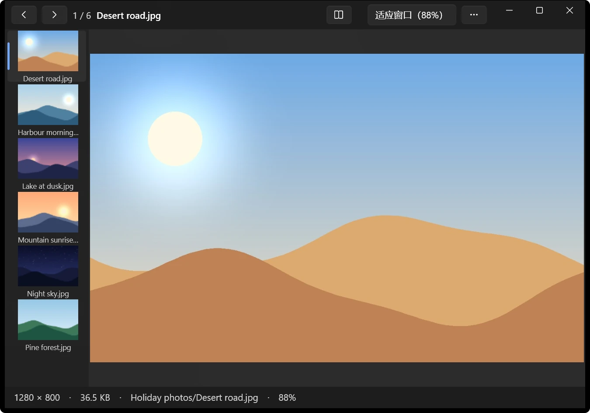
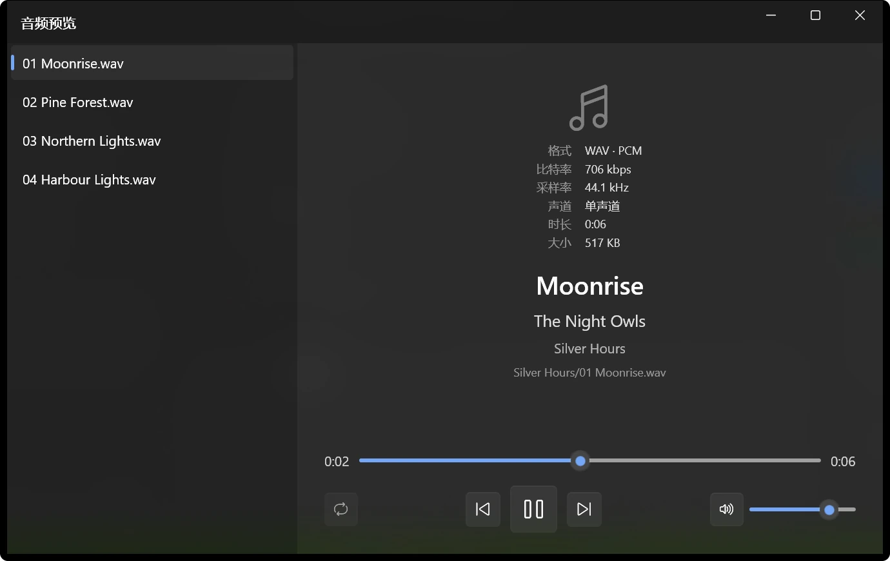
整本书按顺序阅读，可以跨文件夹，两页并排，也可以从右到左。每本书都会记住读到哪一页。.cbz、.cbr、.cb7 和 .cbt 会直接以阅读模式打开。
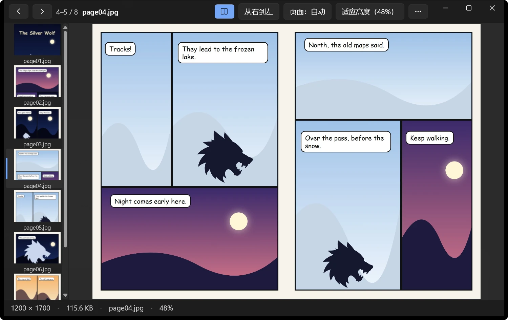
本次用过的密码和已保存的密码会先尝试，再询问你。保存的密码按你的 Windows 账户加密，也可以加上主密码。不会发送到任何地方。
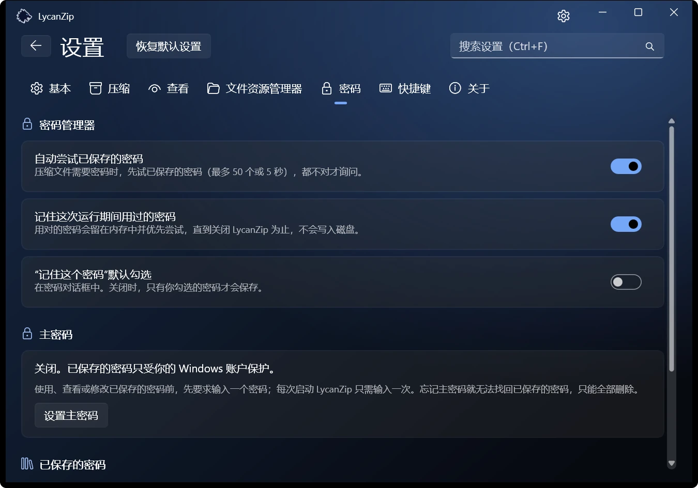
菜单项直接出现在 Windows 11 菜单的第一层，无需先点“显示更多选项”。Windows 只允许已签名的软件包这样做，所以它只在 Microsoft Store 版提供。其他版本使用传统菜单。
浅色或深色，六种强调色，或直接跟随 Windows。音效（两组）和动画都是可选的，可以关闭。
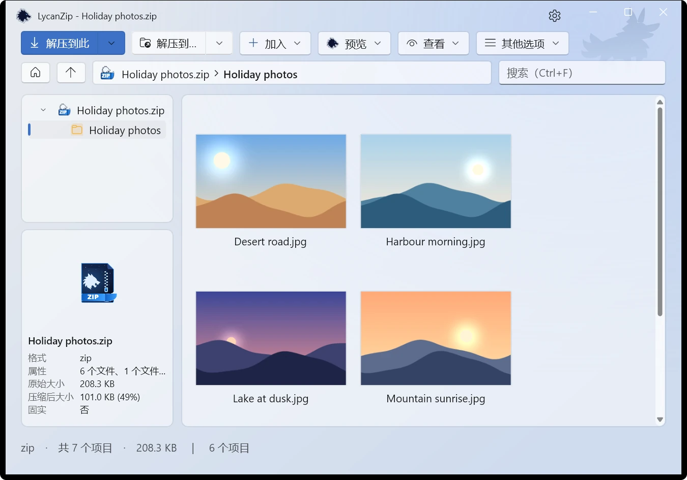
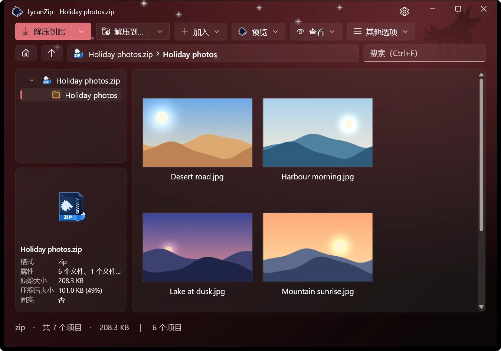
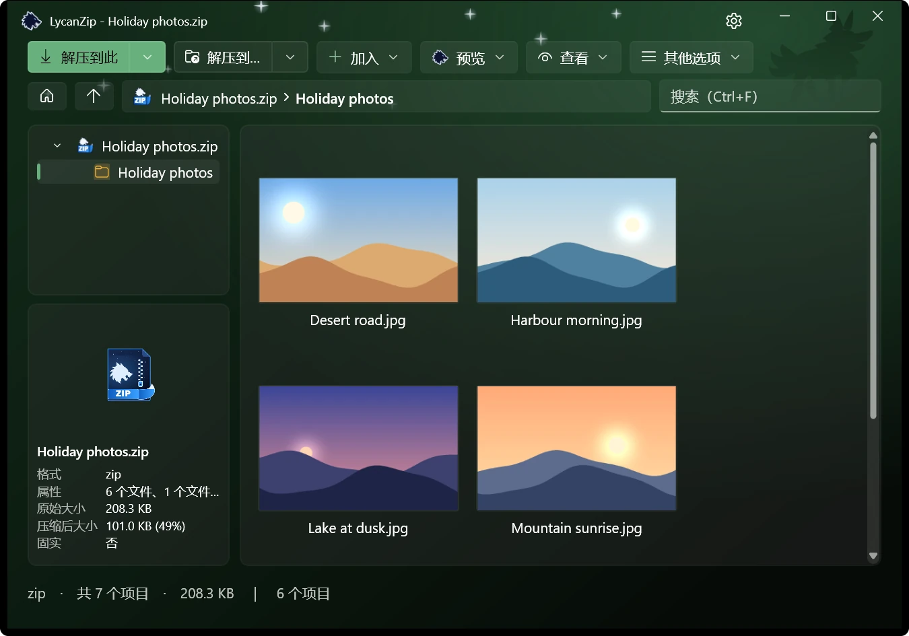
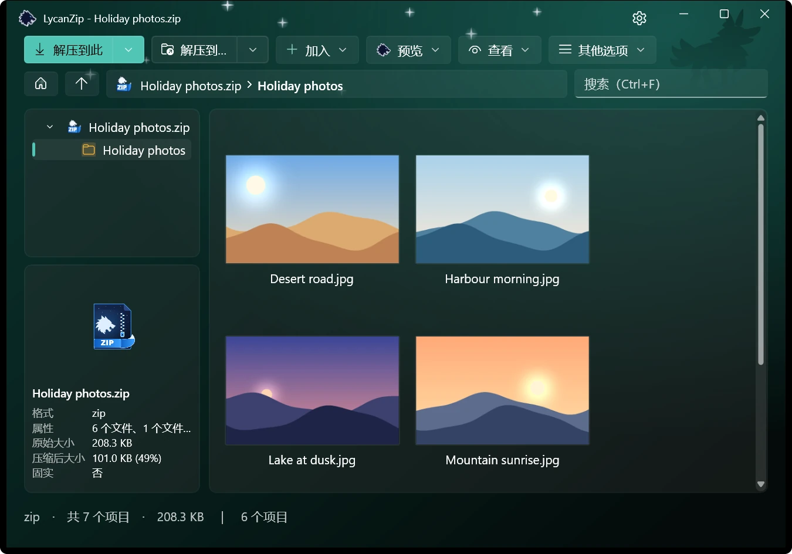
在 zip、7z 和 tar 中添加、删除、重命名、替换，或用你自己的编辑器修改文件再存回去。全程在安全的副本上进行。
没有遥测、没有广告、不收集任何数据。另外还有三种方法，检查你要打开的内容：
通过 Windows AMSI，用你自己的杀毒软件扫描压缩文件，无需解压到磁盘。
计算任何文件、文件夹或压缩文件的哈希值。双击即可验证 .sha256 文件。
点一下就打开该文件哈希值的 VirusTotal 页面。只发送哈希值，绝不上传文件。
不安全的路径会被拒绝，不会跟随链接，也能拦下压缩炸弹。
英语、繁体中文、简体中文、日语、韩语、德语、西班牙语和法语。
利用业余时间制作。如果它帮你节省了时间，请杯咖啡很有帮助；报告问题也是。